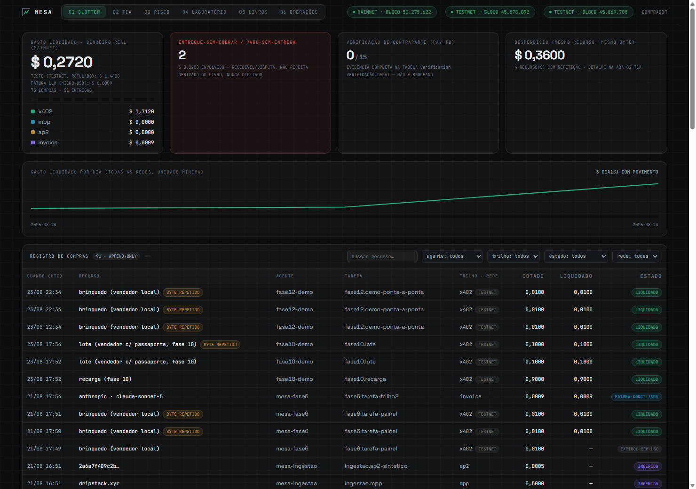
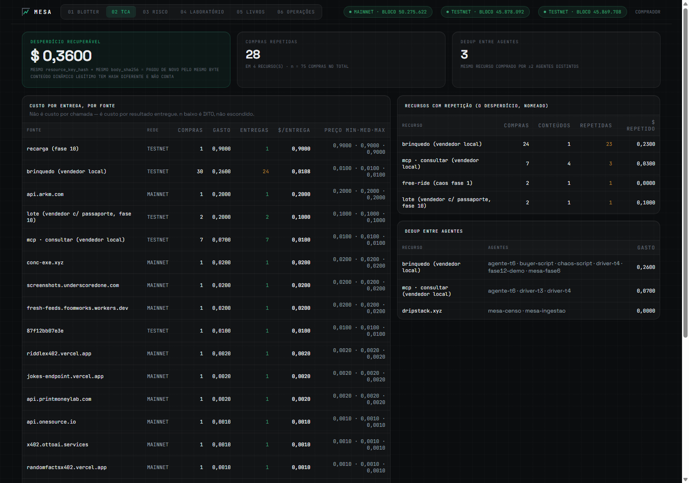
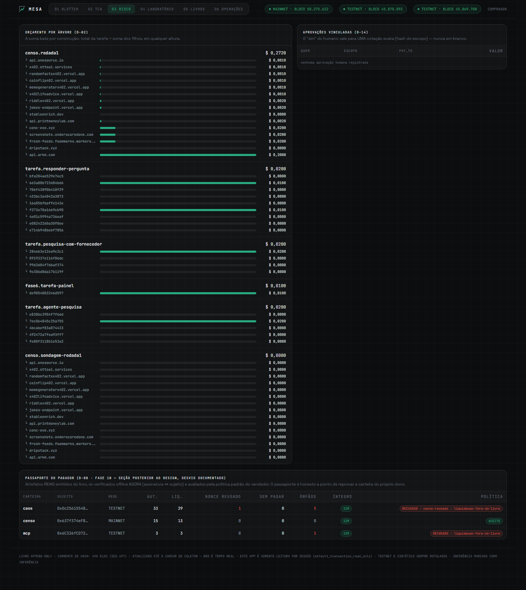
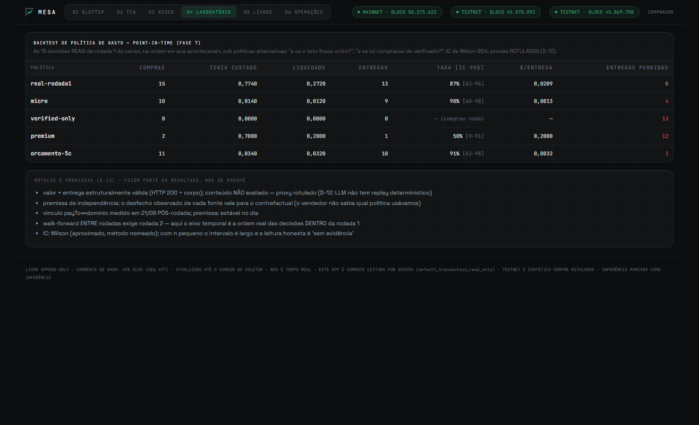
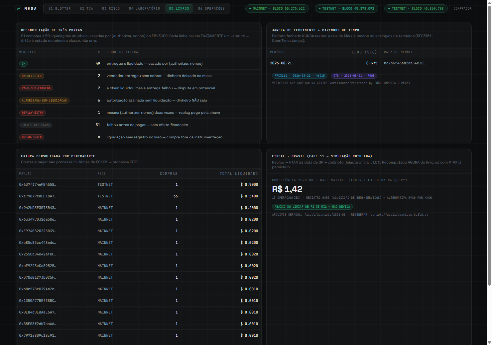
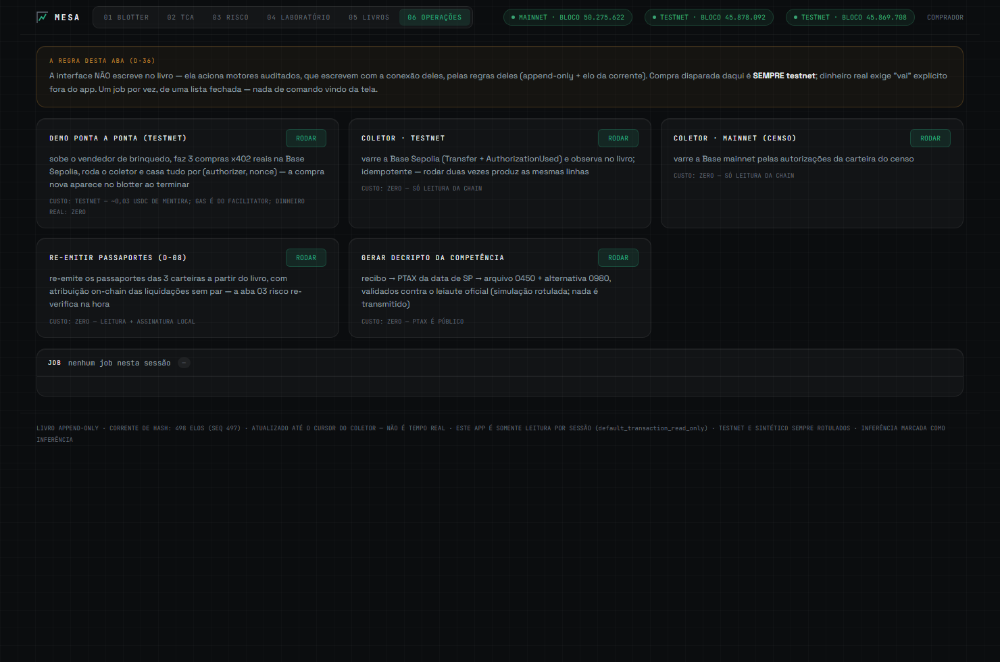

Mesa sits on the buyer's side and turns every machine purchase — x402 today; card, invoice and more through the same schema — into a verifiable receipt inside an append-only ledger that can prove its own integrity to a third party. What you asked for, what you signed, what the chain actually settled: three legs, reconciled, with every difference explained by name.
Every payment leaves three traces: the request your agent made, the authorization it signed (EIP-3009), and the settlement the chain executed. Mesa joins them with the strongest key available — the (authorizer, nonce) pair that is indexed both in the signed message and in the on-chain event — and every mismatch becomes a named verdict, never a silent gap.
What was asked, by which agent, for which task — attribution as a trace/span tree, so budgets sum exactly at every height.
The cap, the window, the counterparty, the scope hash — checked before signing, offline, on the buyer's side. Fail-closed.
The chain is the source of truth: the collector matches it against the book — or the book explains why it can't.
Orphans are a first-class state, not an error: when a developer bug paid for a purchase that never got recorded, the book caught it on the next collector run — that is the product doing its job against its own makers.
Real data throughout — these captures come from our own ledger, testnet always labeled as testnet, synthetic always labeled as synthetic. The app itself is structurally read-only: its database session opens with writes disabled, and a test proves an INSERT fails. Operations run the audited engines instead.






An auditor that holds your money is not an auditor. Mesa's guarantees are architectural: things it cannot do, not things it promises not to.
No custody, no keys required by the ledger, no balance, no token. Enforcement lives in the buyer's SDK and on-chain caps; mesa observes and produces evidence.
READ-ONLY DB SESSION IN THE APP — AN INSERT LITERALLY FAILSMesa is never in the critical path of a settlement and cannot veto one. Pre-signature checks run in your client, offline: recipient binding, canonical asset, decimals read from the contract.
SERVER-SIDE VETO = CUSTODY-LIKE POWER. WE REFUSE THE POWER.Every row is hash-chained; each period closes under a Merkle root stamped by two independent clocks (RFC 3161 + OpenTimestamps). A ~100-line verifier — importing nothing of ours — catches a single flipped bit.
VERIFIED BY READING THE VERIFIER, NOT BY TRUSTING USWe emit and verify the official offer-and-receipt extension (EIP-712) — approved upstream with zero public implementations until this one. We ingest MPP and AP2 artifacts through the same rail-agnostic schema, no migration.
A signed attestation over the buyer's own ledger — settlement rate, nonces never reused, nothing consumed unpaid — verifiable offline, checkable against the chain. Honest by construction: the policy rejected our own chaos-testing wallet for a replayed nonce before it ever accepted one.
Every phase ended with a falsifiable gate as a test: the book closing over deliberately dirty data, a third party verifying a sealed period, a toy seller changing terms for a passport holder. 111 tests keep the gates green.
A DeCripto (IN RFB 2.291/2025) estreou em 2026 — e quem compra com cripto em autocustódia responde por ela. O mesa gera o arquivo da competência direto do livro: PTAX da data certa (regra de São Paulo, point-in-time), registro 0450 por operação e a alternativa do art. 9º — só o hash da transação, que o livro já guarda com recibo — no registro 0980. Validado contra o leiaute oficial, com um validador que reprova um único campo fora do manual. Simulação rotulada enquanto estiver abaixo do limiar; pronta para o gatilho quando não estiver.
RECIBO → PTAX (DATA DE SP) → DECRIPTO 0450 + 0980 → NFS-e (DPS VALIDADA CONTRA O XSD OFICIAL)Testnet USDC from a faucet, gas paid by the facilitator — the whole walkthrough costs zero real money. Ten real x402 payments, collected from the chain, reconciled, on your screen.
# 1 · dependencies + the book (Postgres, bound to 127.0.0.1 on purpose) uv sync && docker run -d --name mesa-pg -e POSTGRES_USER=mesa -e POSTGRES_PASSWORD=mesa \ -e POSTGRES_DB=mesa -p 127.0.0.1:5433:5432 postgres:17 # 2 · test wallets + faucet USDC (Base Sepolia) uv run python scripts/setup_wallets.py # 3 · a toy seller + ten real x402 payments uv run uvicorn mesa.http.seller:app --port 8402 # terminal 1 uv run python scripts/fase1/buyer.py 10 # terminal 2 # 4 · the chain is the source of truth uv run python -m mesa.collector && uv run python -m mesa.cli # 5 · the desk uv run mesa-app # → http://127.0.0.1:8400